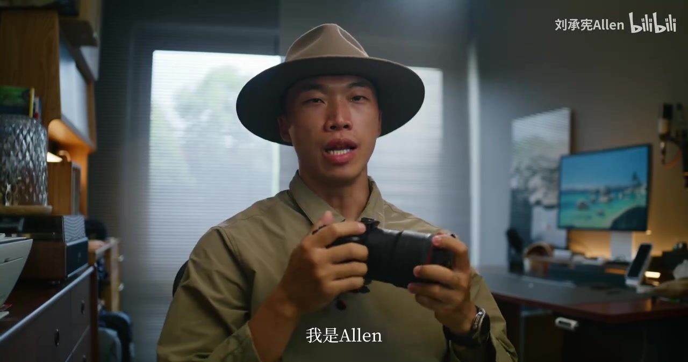
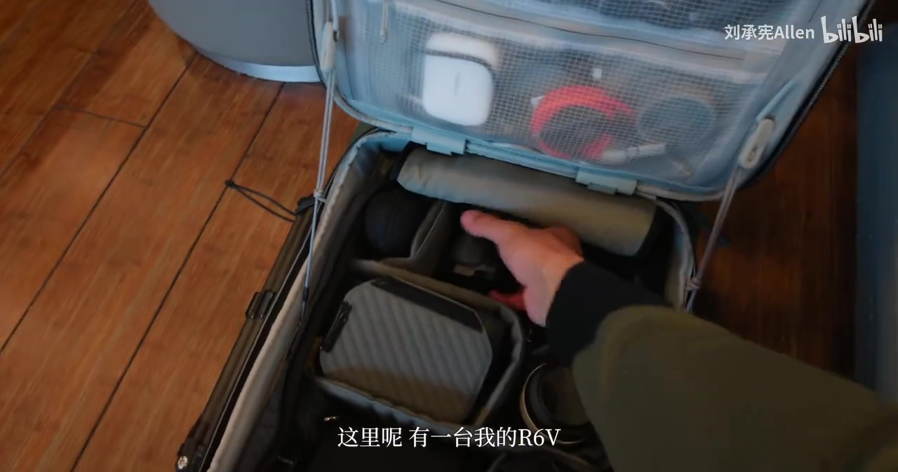
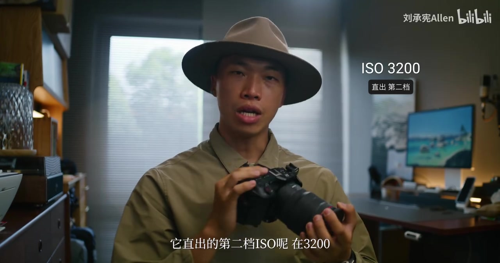
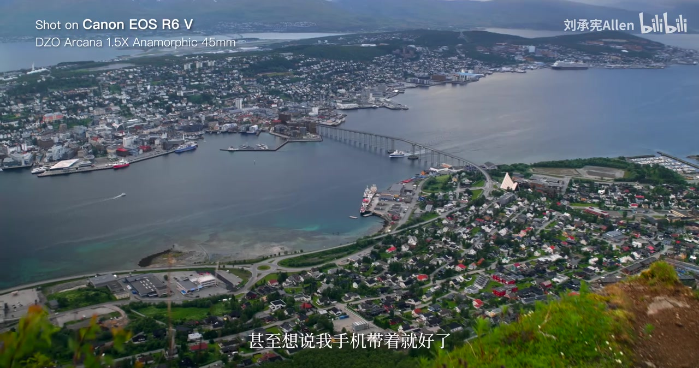
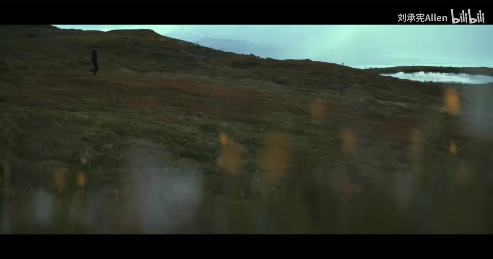
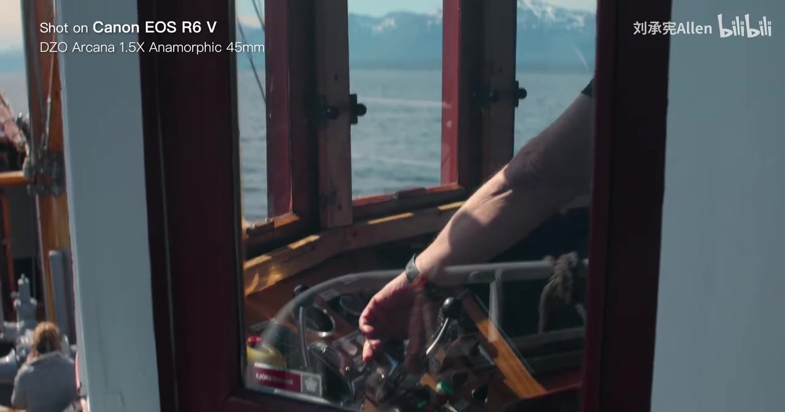
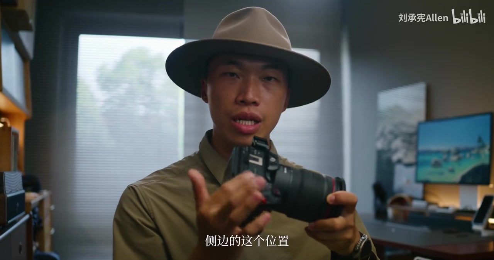

01
中文
这台相机的传感器跟R6M3是一样的，所以这期视频我不会聊太多的规格。
EN
This camera's sensor is the same as the R6 Mark III's, so I won't talk specs much in this video.
表达提示the same sensor（相同传感器）；talk specs（聊规格）

Scene English · 相机评测 · 佳能R6 V实拍体验
Taking the Canon R6 V to the Nordics: My Thoughts After a Month of Real Shooting
🎧 语音讲解
Opening: What the R6 V Changed
情境UP主带着佳能R6 V去了挪威霞穆尼，用了一个多月。这期不聊太多规格（传感器跟R6M3一样），分享它到底改变了哪些创作方式、哪些地方让人离不开它、哪些地方希望下一代改进。语域：评测口播，预告提纲。
这台相机的传感器跟R6M3是一样的，所以这期视频我不会聊太多的规格。
This camera's sensor is the same as the R6 Mark III's, so I won't talk specs much in this video.
表达提示the same sensor（相同传感器）；talk specs（聊规格）
我想要跟大家分享它到底改变了我的哪些创作方式。
I want to share exactly how it has changed my creative workflow.
表达提示creative workflow（创作方式）；exactly how（到底怎样）
哪一些地方让我离不开它，又有哪一些地方我还希望佳能的下一代可以继续改进。
What makes it indispensable to me, and what I hope Canon will improve in the next generation.
表达提示indispensable（离不开）；the next generation（下一代）
不聊规格 → won't talk specs / skip the spec sheet
离不开它 → indispensable / can't live without it

Why I Bought It: Compactness and High ISO
情境购买动机有两个：一是紧凑设计——没有取景器，可以架着快装版直接收进包里，空间占用非常小。二是两档ISO——直出第二档ISO在3200，C-Log2第二档在6400，室内很多场景以前需要减光镜，现在直接把ISO推到6400就能拍。语域：评测口播，实物演示。
它没有取景器，我就可以下面再架着快装版收进去，它占的空间非常非常的小。
It has no viewfinder, so I can slide it into the bag on a quick-release plate — it takes up so little space.
表达提示a quick-release plate（快装版）；takes up so little space（占空间很小）
C-Log2的第二档ISO在6400，室内很多场景我直接把ISO推到6400就可以继续拍了。
C-Log2's second-base ISO is 6400 — for many indoor scenes I just push ISO to 6400 and keep shooting.
表达提示second-base ISO（第二档ISO）；push ISO to 6400（把ISO推到6400）
以前我会需要裁减光镜，而现在我都不需要了，提高了很多室内外场景转换的拍摄效率。
I used to need ND filters; now I don't — it boosted my indoor-outdoor shooting efficiency a lot.
表达提示ND filters（减光镜）；shooting efficiency（拍摄效率）
占空间小 → takes up little space / packs down small
拍摄效率 → shooting efficiency / quicker scene changes

Battery Life: Completely Unnecessary Worry
情境原本最担心续航，带了很多电池，结果完全白担心。拍摄鸟类时相机大多数情况待机，随时拍摄。从早上9点到下午4点拍将近2TB素材只用了5颗电池，跟R5M2续航状况差不多，还省下了电池添购费用。语域：评测口播，实测数据。
我原本最担心的就是续航，所以这次我带了很多的电池，结果是完全白担心。
Battery life was my biggest worry, so I packed tons of batteries — turns out it was completely unnecessary.
表达提示completely unnecessary（完全白担心）；pack tons of batteries（带很多电池）
从早上9点到下午4点，拍摄的素材量将近2TB，总共只使用了5颗电池。
From 9 a.m. to 4 p.m., I shot nearly 2TB of footage using just five batteries.
表达提示footage（素材）；just five batteries（只用了5颗电池）
也因此我省下了不少的电池添购费用。
Which also saved me from buying a lot of extra batteries.
表达提示save from buying（省下添购费用）
白担心 → worry for nothing / unnecessary worry
待机随时拍 → standby-ready / always on, ready to shoot

Tromsø: Light Breaking Through the Clouds
情境拍鸟之后回到挪威特罗姆瑟。那天是下雨天，但坐上观光缆车后光从云中间照出来射在岛上，超级漂亮。原本想着只观光带手机就好，结果当天太阳突然穿过云层，整个特罗姆瑟被光打亮，非常庆幸当时带的是R6V。语域：评测口播，场景叙述。
特罗姆瑟有一个观光缆车，你可以上到山顶去俯瞰整个城市。
Tromsø has a sightseeing cable car that takes you to the top to overlook the city.
表达提示a sightseeing cable car（观光缆车）；overlook the city（俯瞰城市）
那天是个下雨天，但是当我上到缆车上面之后，光从云中间照出来，射在岛上面，超级的漂亮。
It was a rainy day, but once I got up on the cable car, light broke through the clouds and hit the island — absolutely stunning.
表达提示light broke through the clouds（光穿透云层）；absolutely stunning（超级漂亮）
太阳突然穿过云层，整个特罗姆瑟被光打亮，我真的蛮庆幸我当时带的是R6V。
The sun suddenly cut through the clouds and lit up all of Tromsø — I'm so glad I had the R6V with me.
表达提示lit up all of Tromsø（照亮整个特罗姆瑟）；so glad（很庆幸）
光穿云层 → light broke through the clouds / sun cut through
被光打亮 → lit up / bathed in light

Open Gate: Just Keep Shooting
情境在缆车上根本不用去思考拍横的还是竖的，直接Open Gate拍摄，甚至有7K RAW 60fps。确实很吃存储，UP主用竖拍宽银幕的方式拍了接近1:1的素材格式，参考另一位博主李宇辰的视频。语域：评测口播，格式讲解。
那时候我根本不用太去思考我到底要拍横的还是竖的，我就直接Open Gate。
I didn't have to think about horizontal or vertical — I just shot in Open Gate.
表达提示Open Gate（全画幅全高模式）；horizontal or vertical（横或竖）
甚至我有7K RAW 60fps，我拍就对了。
I even have 7K RAW at 60fps — I just kept shooting.
表达提示7K RAW at 60fps（7K RAW 60帧）
确实这样拍会吃掉非常多的存储，所以我用了竖拍宽银幕的方式拍了一个接近1比1的素材格式。
It does eat up a ton of storage, so I used the vertical-wide technique to shoot a near-1:1 format.
表达提示eat up storage（吃存储）；a near-1:1 format（接近1:1的格式）
拍就对了 → just keep shooting / don't overthink it
吃存储 → eat up storage / storage-hungry

Rain, Wind, and Heat: Doubts Put to Rest
情境山上雨大风大，很多人担心风扇设计下雨怎么办。R6V的风扇设计在机身侧边，风往外排，一般下雨环境进水风险没那么高。过热方面，室内连续拍5分钟Open Gate RAW视频没有任何过热提醒，大家可以完全把疑虑拿掉。语域：评测口播，实测说明。
很多人会像我一样很担心，它的风扇设计下雨怎么办。
Many people would worry like I did — what about the fan design in the rain?
表达提示the fan design（风扇设计）；in the rain（下雨时）
R6V的风扇设计在机身的侧边，而且风是往外排的，一般下雨的环境进水风险没那么高。
The R6V's fan is on the side of the body and blows outward, so rain-seepage risk is lower than you'd think.
表达提示blows outward（往外排）；seepage risk（进水风险）
我在室内连续拍摄5分钟Open Gate RAW的视频，都没有任何过热的提醒。
I shot five straight minutes of Open Gate RAW indoors with zero overheating warnings.
表达提示overheating warnings（过热提醒）；five straight minutes（连续5分钟）
进水风险 → rain-seepage risk / water ingress risk
疑虑消除 → doubts put to rest / worries gone
Creating on a 109-Year-Old Boat
情境在特罗姆瑟报名了一艘有109年历史的木造渔船的出海行程，天气非常好，只带了R6V。UP主在船上疯狂寻找光影、美丽的视角，享受寻找电影感故事感的创作过程。全程几乎都用Open Gate RAW拍摄，存储量大但换来最高画质和最多细节。语域：评测口播，情感叙述。
搭的是一艘已经有109年历史的木造渔船，那时候他们跟我分享了关于这艘船的故事，让我想起一部电影叫做《战马》。
The boat was a 109-year-old wooden fishing vessel — and hearing its story reminded me of the film War Horse.
表达提示a wooden fishing vessel（木造渔船）；remind me of（让我想起）
我非常享受我拿着这台相机疯狂寻找光影、美丽角度的创作过程。
I thoroughly enjoyed hunting for light and beautiful angles with this camera.
表达提示hunting for light（寻找光影）；beautiful angles（美丽角度）
再强调一次存储量确实很大，但这个格式让我拥有最高的画质、最多的细节，我拍就对了。
Again, storage is huge — but this format gives me the best quality and most detail, so I just keep shooting.
表达提示the best quality and most detail（最高画质最多细节）
疯狂寻找光影 → hunting for light / chasing light and shadow
电影感故事感 → cinematic, story-driven / filmic and narrative

Three Flaws, and What Makes a Successful Camera
情境如果要挑缺点：快门帘希望能回来，换镜头更安心（但1399的价格没什么好抱怨的）；速控菜单不能直接调Open Gate，需要跳进菜单关设置，效率低一点；开机键在机身侧边容易误触，前面录制键端着Vlog时容易碰到。最后总结：R6V不只是一台性能怪兽，还是一台愿意让你一直待在身边的相机。创作最重要的是画面出现时相机就在手上。语域：评测口播，辩证收尾。
第一个缺点就是快门帘，我真的很希望它那个快门帘能够回来，让我换镜头的时候就不用担心太多。
The first flaw is the shutter curtain — I really wish it would come back, so I wouldn't worry when swapping lenses.
表达提示the shutter curtain（快门帘）；swap lenses（换镜头）
开机键设计在手柄的侧边，放进背包里就可能会一推就开机，误触概率还蛮高的。
The power button sits on the grip's side, so sliding it into a backpack can power it on — accidental triggers are common.
表达提示accidental triggers（误触）；power it on（开机）
如果一台相机让你更愿意去记录、更愿意去创作，那它对我来说就是一台成功的相机。
If a camera makes you more willing to record and create, then to me, it's a successful camera.
表达提示more willing to create（更愿意创作）；a successful camera（成功的相机）
误触 → accidental triggers / bump it on by accident
性能怪兽 → a performance beast / an absolute powerhouse
说相机占空间小
说担心是多余的
说雨天下风扇没问题
说相机的意义
same 前需要 the，且 the same as 是固定搭配。
very worry 中式；用 my biggest worry 或 I was really worried。
take much storage 生硬；用 eat up storage（吃存储）更地道。
need 后接 to do；think about（考虑）不能漏介词 about。